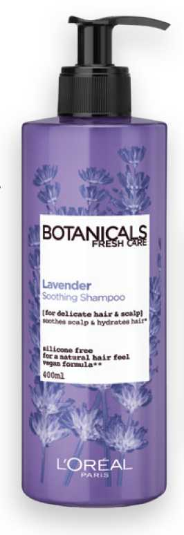
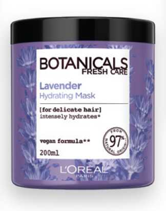
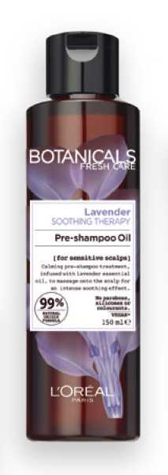
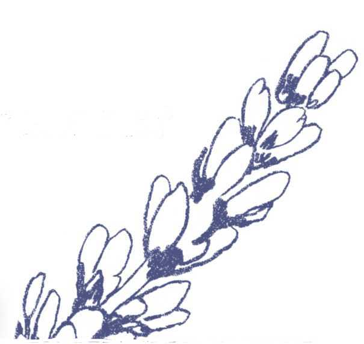

ОЛІЯ
ДЛЯ ВОЛОССЯ
Заспокоює шкіру голови, сприяє зволоженню і пом'якшенню волосся. Наносьте масажними рухами на шкіру голови. Залиште на 5-15 хвилин, насолоджуючись розслабляючим свіжим ароматом, і 1-2 рази з використанням шампуню. Формула містить 99% інгредієнтів натурального походження, не містить сультаів2 і силіконів3.





Призначена для тонкого волосся та чутливої шкіри голови. Поєднує в собі заспокіливі властивості оранічної ефірної олії лаванди.
1.Споживчий тест, 84 особи,
після першого використання шампуню.